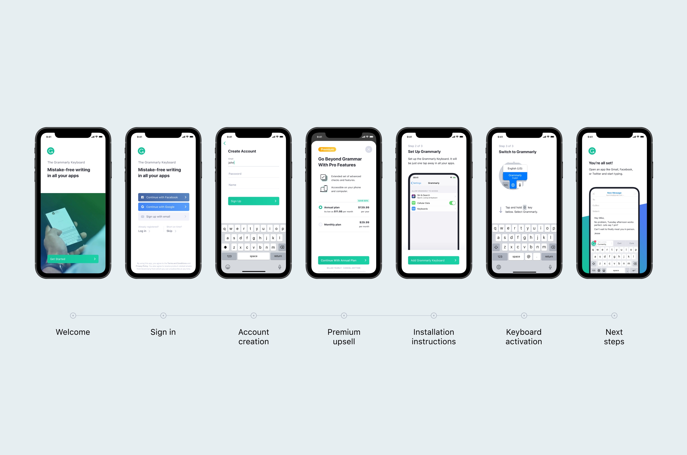
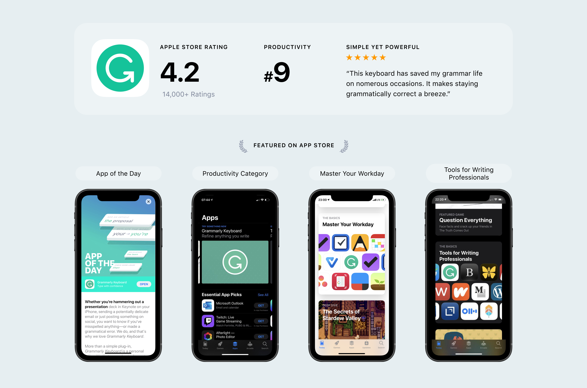

Designing a Smarter Keyboard

Grammarly Keyboard replaces native mobile keyboard and augments writing with advanced grammar and punctuation suggestions, tone detection and context synonyms.

Grammarly solves the problem of anxiety people have when they need to write something important on their phone. Grammarly helps to avoid confusion by making writing clear and mistake-free.

The Keyboard corrects mistakes and suggests improvements while you type. You can apply those suggetsion with one click without losing the context. This type of interaction works best for messages and quick emails and called Inline Mode.
For more indepth and longer pieces we designed Revise mode. It allows to focus on writing suggestion after you finished writing.
Tone Detection and Synonyms good examples of features that are base on machine learning technologies that allows to show more complex in-depth suggestions. To differentiate those features I came up with a concept of “swoosh”.


To bring another level of engagement and improve users writing skills passively and encourage people to use Grammarly more in general we designed gamification flows.

Onboarding was the crucial part of the product. Installing keyboard is not a trivial task and for many users it was their first time doing this. If on-boarding is confusing people would just churn without getting any value from our product.
Grammarly became one of the most popular writing productivity apps on the App Store. It was featured by Apple many times and had millions of everyday users around the world.
